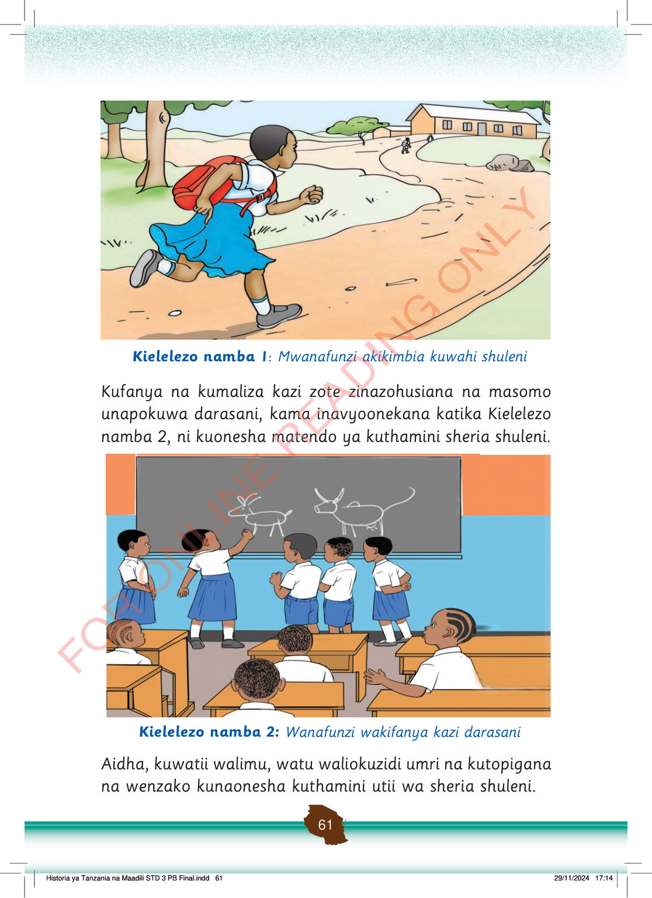

Mwanafunzi anakimbia kuwahi shuleni akiwa amebeba begi mgongoni.
Kielelezo namba 1: Mwanafunzi akikimbia kuwahi shuleni
Kufanya na kumaliza kazi zote zinazohusiana na masomo unapokuwa darasani, kama inavyoonekana katika Kielelezo namba 2, ni kuonesha matendo ya kuthamini sheria shuleni.
Wanafunzi wanasimama mbele ya ubao wakifanya kazi darasani, na wenzao wanatazama kutoka kwenye madawati.
Kielelezo namba 2: Wanafunzi wakifanya kazi darasani
Aidha, kuwatii walimu, watu waliokuzidi umri na kutopigana na wenzako kunaonesha kuthamini utii wa sheria shuleni.
Historia ya Tanzania na Maadili STD 3 PB Final.indd 61
29/11/2024 17:14